clear; clc; close all;
load projIB.mat;
Fs = 44100;
Fp = 2500;
Fs_stop = 4000;
Rp = 3;
Rs = 95;
filter_types = {'Butterworth', 'Chebyshev Type I', 'Chebyshev Type II', 'Elliptic', 'Parks-McClellan', 'Kaiser'};
filter_functions = {@butterworth_filter, @chebyshev1_filter, @chebyshev2_filter, @elliptic_filter, @pm_filter, @kaiser_filter};
x = noisy;
t = (0:length(x)-1) / Fs;
for i = 1:length(filter_types)
filter_name = filter_types{i};
filter_func = filter_functions{i};
if contains(filter_name, 'Parks-McClellan') || contains(filter_name, 'Kaiser')
[b, filter_order, num_multiplications] = filter_func(Fp, Fs_stop, Rp, Rs, Fs);
[H, W] = freqz(b, 1, 1024, Fs);
[gd, W_gd] = grpdelay(b, 1, 1024, Fs);
y = filter(b, 1, x);
else
[sos, filter_order, num_multiplications, z, p] = filter_func(Fp, Fs_stop, Rp, Rs, Fs);
[H, W] = freqz(sos, 1024, Fs);
[gd, W_gd] = grpdelay(sos, 1024, Fs);
y = sosfilt(sos, x);
end
fprintf('%s Filter:\n', filter_name);
fprintf(' Filter Order: %d\n', filter_order);
fprintf(' Multiplications per Sample: %d\n', num_multiplications);
figure('Name', [filter_name ' Frequency Response Analysis']);
subplot(3, 1, 1);
plot(2 * pi * W / Fs, 20*log10(abs(H)));
title([filter_name ' Magnitude Response (dB)']);
xlabel('Frequency (radians per sample)');
ylabel('Magnitude (dB)');
grid on;
xlim([0, pi]);
subplot(3, 1, 2);
plot(W, abs(H));
title('Passband Ripple');
xlabel('Frequency (Hz)');
ylabel('Magnitude');
grid on;
xlim([0 Fp]);
subplot(3, 1, 3);
plot(W_gd, gd);
title('Group Delay (Samples)');
xlabel('Frequency (Hz)');
ylabel('Group Delay (samples)');
grid on;
figure('Name', [filter_name ' Pole-Zero and Impulse Response']);
subplot(2, 1, 1);
if contains(filter_name, 'Parks-McClellan') || contains(filter_name, 'Kaiser')
zplane(b, 1);
else
zplane(z, p);
end
title([filter_name ' Pole-Zero Diagram']);
grid on;
impulse = [1; zeros(99, 1)];
if contains(filter_name, 'Parks-McClellan') || contains(filter_name, 'Kaiser')
imp_response = filter(b, 1, impulse);
else
imp_response = sosfilt(sos, impulse);
end
subplot(2, 1, 2);
stem(0:99, imp_response, 'filled');
title('Impulse Response');
xlabel('Sample');
ylabel('Amplitude');
grid on;
figure('Name', [filter_name ' Filtered Signal']);
plot(t, y);
title([filter_name ' Filtered Output Signal']);
xlabel('Time (s)');
ylabel('Amplitude');
grid on;
disp(['Playing ', filter_name, ' filtered output signal...']);
soundsc(y, Fs);
pause(length(y) / Fs + 1);
end
Butterworth Filter:
Filter Order: 24
Multiplications per Sample: 60
Playing Butterworth filtered output signal...
Chebyshev Type I Filter:
Filter Order: 12
Multiplications per Sample: 30
Playing Chebyshev Type I filtered output signal...
Chebyshev Type II Filter:
Filter Order: 12
Multiplications per Sample: 30
Playing Chebyshev Type II filtered output signal...
Elliptic Filter:
Filter Order: 8
Multiplications per Sample: 20
Playing Elliptic filtered output signal...
Parks-McClellan Filter:
Filter Order: 58
Multiplications per Sample: 59
Playing Parks-McClellan filtered output signal...
Kaiser Filter:
Filter Order: 179
Multiplications per Sample: 180
Playing Kaiser filtered output signal...
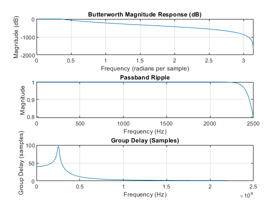 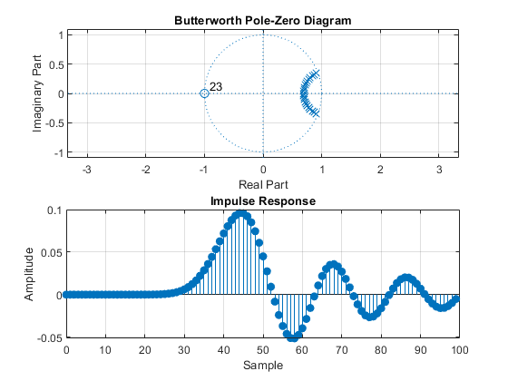 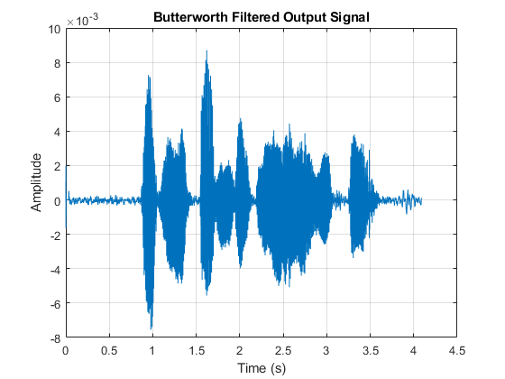 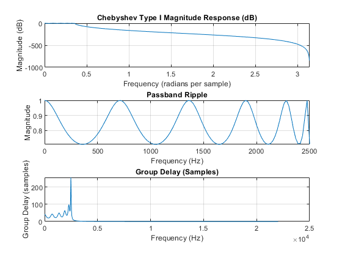 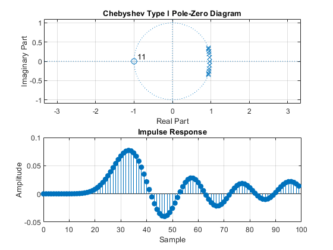 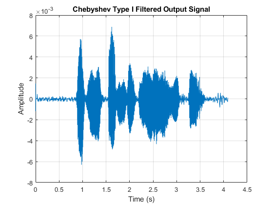 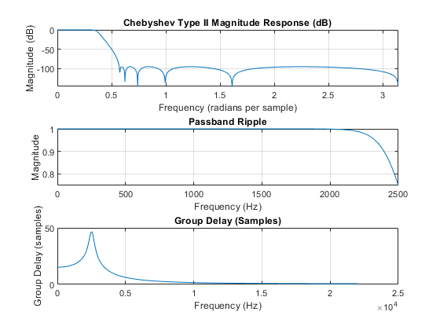 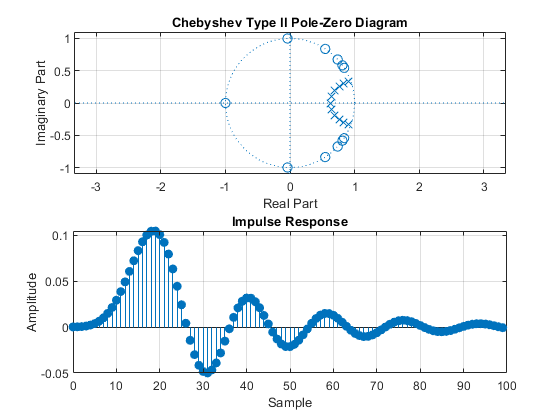 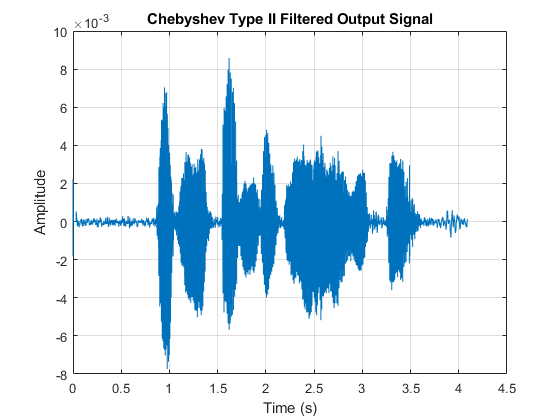 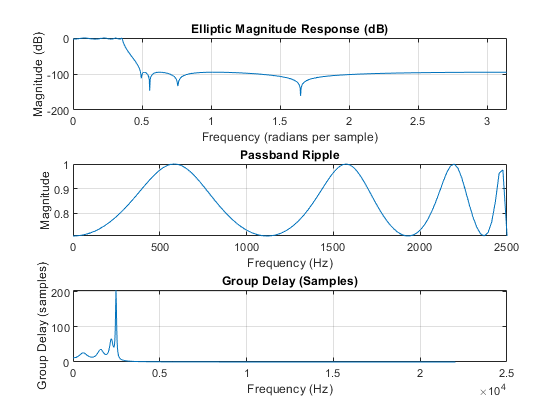 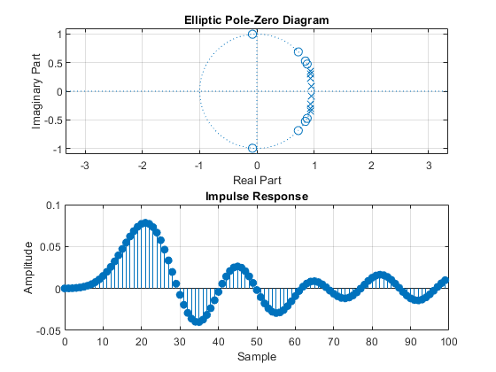 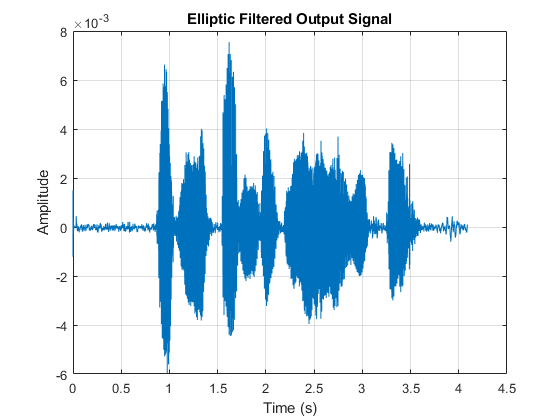 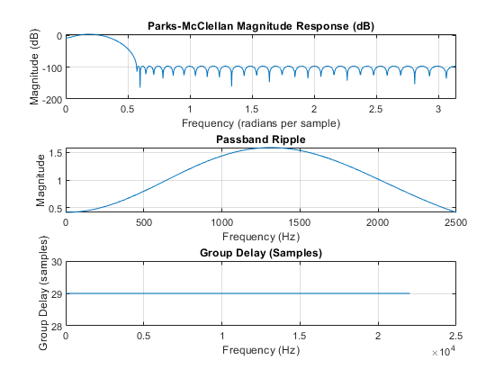 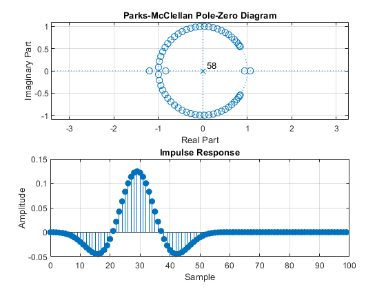 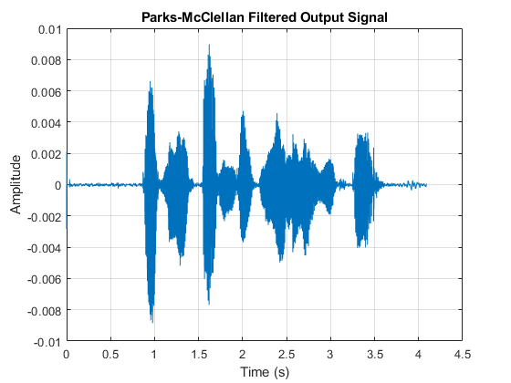 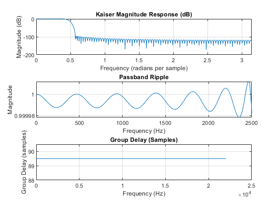 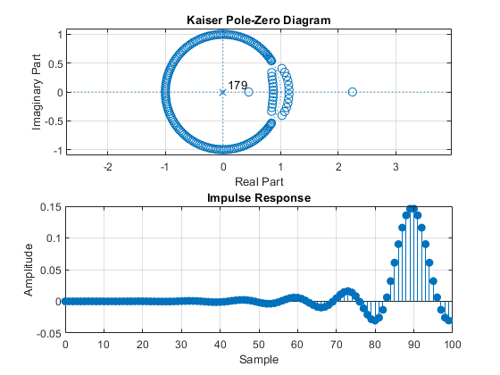 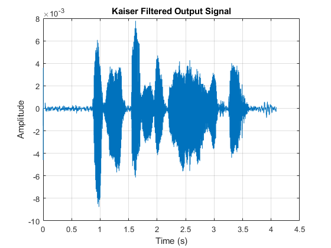